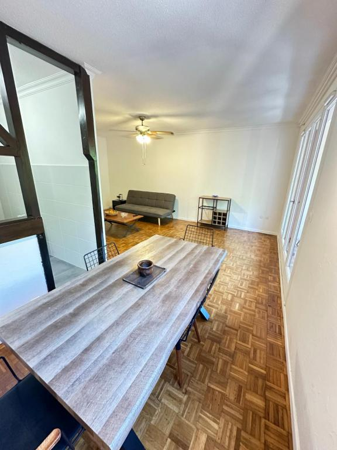

Peregrinos Bravos
›
Viaje 02
›
Etapa 02
Etapa 02
Antonio Machado
Portbou → Port Vendres · Ruta interior (por definir)
Portbou
Port Vendres
← Etapa 01 — Benjamin
Etapa 03 — El exilio →
Notas de viaje · Antonio Machado
Lectura
Antonio Machado. Ligero de equipaje
Biografía poética del poeta sevillano
Abrir el documento →
Audio
Podcast especial sobre Antonio Machado
El último verso del poeta
Escuchar el programa →
Audiovisual
📺
Los mundos sutiles
Eduardo Chapero-Jackson, 2012 · Imprescindibles, RTVE
Ver en RTVE Play →
Gratuito
🎬
Los días azules
Laura Hojman, 2020 · Con Gibson, García Montero, Muñoz Molina
Ver en Filmin →
Suscripción
🎵
Serrat — Cantares
Del álbum
Dedicado a Antonio Machado, poeta
, 1969
Escuchar en YouTube →
Gratuito
🎵
Serrat — En Collioure
Homenaje directo a Machado. Letra y música de Serrat.
Escuchar en YouTube →
Gratuito
Mapa de la etapa
Alojamiento
Alojamiento — Noche 2
Le Balcon du Vieux Port · Port Vendres

Ver en Booking →